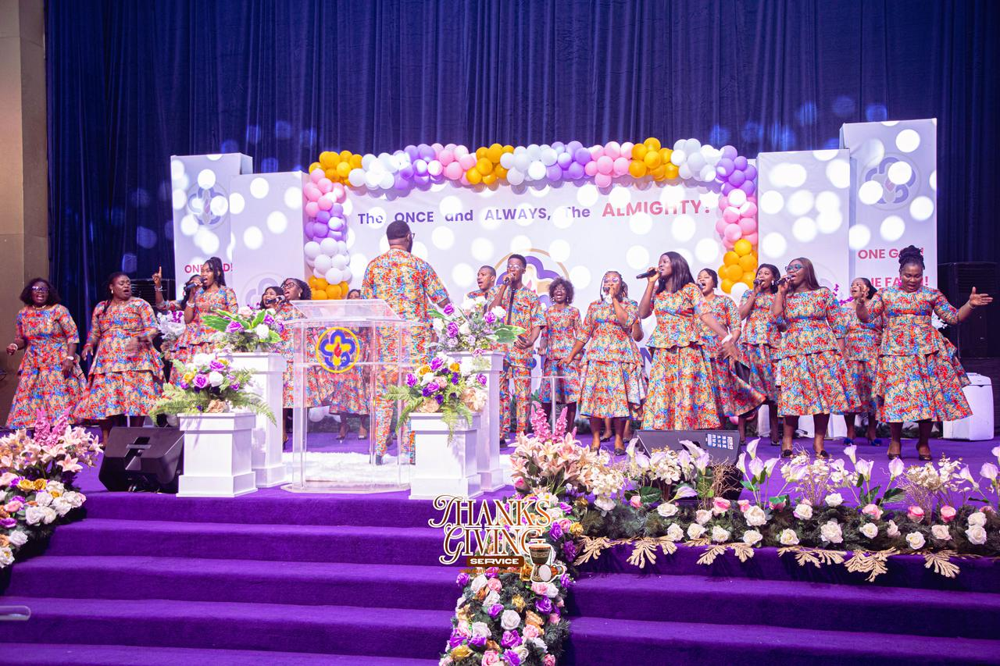
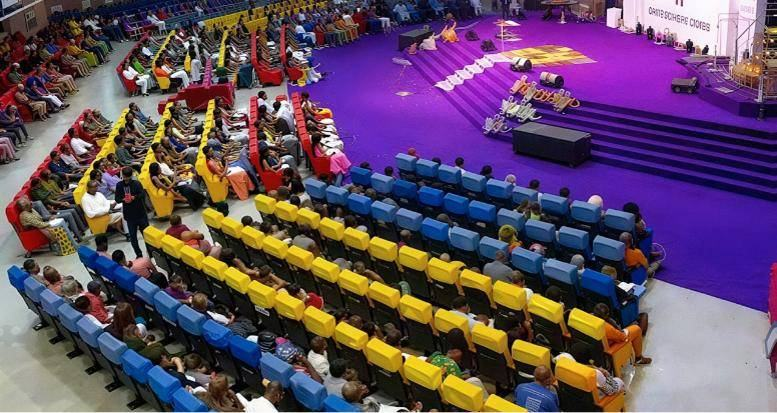

Unity Worship Centre, Utako, Abuja
Do you carry a sound Heaven can use?
Unity Voices is the choir of Unity Worship Centre. We are opening places for good singers, choristers, a keyboardist, a lead guitarist and a drummer to serve in worship with us.
Joining the choir means joining the church.
Unity Voices is not a music group or a band. We are the worship choir of Unity Worship Centre, and every chorister and instrumentalist in Unity Voices is a member of the church.
If you are not a member yet, that is where your journey begins: worship with us, become part of the Unity Worship Centre family, and then serve with us from the choir stand.
- A member of Unity Worship Centre, or ready to become one
- At rehearsal every Saturday, 12 noon in Utako
- Present at church services on Sundays and Wednesdays
Find your place on the stage
Five kinds of places are open right now. Tap a spot on the stage, or pick from the list, to see what we are looking for.
Choristers
Voices that blend and harmonise. You will learn your part in rehearsal and carry corporate worship together with the whole choir.
Introduce yourself as a choristerPlay bass, saxophone or another instrument? You are welcome too. Mention it when you join the group.
Four steps to the choir stand
There is no complicated registration. Here is how it works.
-
Join the WhatsApp group
Say hello and tell us your voice or instrument and the part of Abuja you live in. That is your registration.
-
Come for Saturday rehearsal
We rehearse every Saturday at 12 noon at Kingdom Centre, Plot 125, Ngozi Okonjo Iweala Way, Utako.
-
Become a member and stay consistent
Worship with us at Sunday and Wednesday services, become a member of Unity Worship Centre, and show your commitment by attending faithfully.
-
Meet the choir leadership
The leadership will meet with you, and you begin your ministry through music with Unity Voices.
Rehearsal is every Saturday at 12 noon.
Next rehearsal starts in
Plot 125, Ngozi Okonjo Iweala Way, Utako, Abuja
From every corner of Abuja to one stage in Utako.
Wherever you live, there is a place for you. Tap your area to add it to your introduction below.
Unity Voices in worship
Moments from Thanksgiving, Independence, Celebration, Sunday and Maranatha services at Unity Worship Centre. Tap a photo to see it larger.

The church you will be serving
Unity Worship Centre held its first service on 4 November 2004 in a rented hall at Rajab Plaza, Garki, with more than 600 people in attendance. Led by Pastor Dayo Olutayo, the church now worships at its own home, Kingdom Centre, in Utako, and has branches across Nigeria.
The church also runs Lifegate Academy in Abuja, Lifegate International College in Ilorin, and Mighty Warriors' Bible College for ministerial training. Its mission is to help people keep a continuous relationship with God, point others to Him, and discover and fulfil their purpose.
Visit unityworshipcentre.orgWhen we gather
- Sunday
- 7:30 – 8:00 AM Workers' Prayer
- 8:00 – 10:30 AM Thanksgiving and Celebration Service
- Wednesday
- Supernatural Night Service
- Every month
- Awakening, from the last Wednesday of the month through Sunday: worship, prayer, teaching and encounters with God
- Saturday
- 12:00 noon Unity Voices choir rehearsal
Questions people ask
Do I have to be a member of Unity Worship Centre?
Yes. Unity Voices is the choir of Unity Worship Centre and ministers at the church's services and programmes, so every choir member is a member of the church. If you are not a member yet, start worshipping with us on Sundays and Wednesdays and tell the choir leadership. They will guide you into membership.
Is Unity Voices a music group or band I can join?
No. Unity Voices is a ministry of the church, not an independent music group, band or performance act. We sing and play to lead God's people in worship at Unity Worship Centre.
When and where are rehearsals?
Every Saturday at 12 noon at Kingdom Centre, Unity Worship Centre, Plot 125, Ngozi Okonjo Iweala Way, Utako, Abuja.
I live far from Utako. Can I still join?
Yes. Utako is central, and we welcome singers and instrumentalists from every part of Abuja, from Lugbe and Apo to Gwarinpa, Kubwa and Mararaba. What matters is that you can be at Saturday rehearsals and church services consistently.
How do I register?
Join the WhatsApp group, introduce yourself, and come for Saturday rehearsal. There is no complicated registration process.
I play an instrument that is not listed. Is there room for me?
Right now we especially need keys, lead guitar and drums, but bass and other instrumentalists are welcome. Say what you play when you join the group.
Who do I call with other questions?
Call 0803 786 9734, or ask in the WhatsApp group.
There is a place in the choir stand for you.
O sing unto the LORD a new song: sing unto the LORD, all the earth.
Psalm 96:1